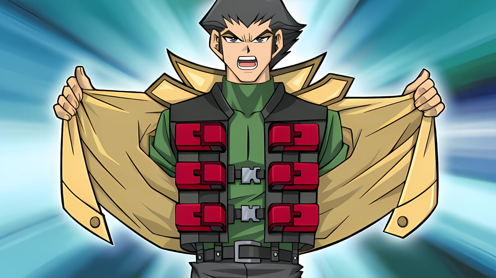

Como desbloquear todos os BOOSTER PACKS
Tome conhecimento de todas as dicas e truques que vão te ajudar a conseguir todos os Boosters do jogo e aprimorar o seu Deck!

Escrito por: Jillzap 23/03/2026 - 19:00
O site pra quem gosta de DUELAR!
Tome conhecimento de todas as dicas e truques que vão te ajudar a conseguir todos os Boosters do jogo e aprimorar o seu Deck!
Escrito por: Jillzap 23/03/2026 - 19:00
Cansado de duelar? Saiba que essa não é a única maneira de maximizar a amizade! Ganhe o coração dos duelistas pela barriga!

Escrito por: Jillzap 22/03/2026 - 15:30
Cada duelista tem uma estratégia para alcançar a vitória, e as receitas são a melhor maneira de descobrir porquê eles são fortes!

Escrito por: Jillzap 21/03/2026 - 13:00
Saiba tudo que é necessário para se tornar o melhor Duelista da Academia de Duelo com dicas que vão enriquecer sua gameplay!
Escrito por: Jillzap 20/03/2026 - 17:00